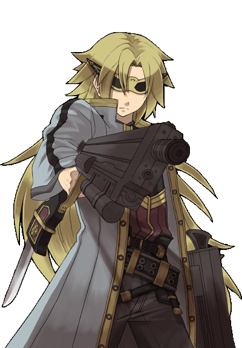
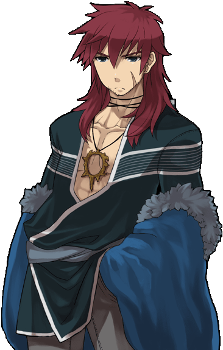
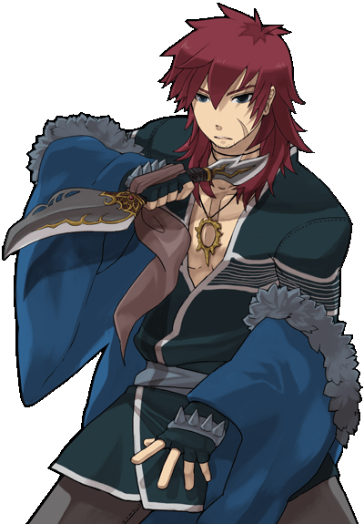
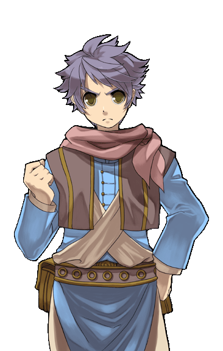
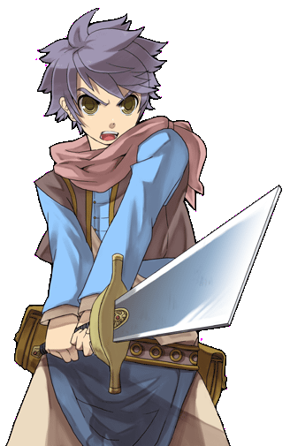

画像にリンクがはってあるものは、クリックすると別窓で大きめサイズが表示されます。
「Strong Stars Story」公式特設ページ（別窓で開きます）
2010年10月12日追加分。
|  | |
ルファク・レイド | ルファク・レイド |
ルファク・レイド | ルファク・レイド |

| |
サビク・モルス | サビク・モルス |
|  | |
サビク・モルス | サビク・モルス |
|  | |
サビク・モルス |
サビク・モルス |
サビク・モルス | サビク・モルス |
 |
| jpn_sabik09.bmp サビク・モルス |

| |
レオン・ターナー | レオン・ターナー |
|  | |
レオン・ターナー | レオン・ターナー |
レオン・ターナー | レオン・ターナー |
|  | |
レオン・ターナー | レオン・ターナー |
back
(c) Gravity Co., Ltd. & Lee MyoungJin(studio DTDS). All rights reserved.
(c) GungHo Online Entertainment, Inc. All Rights Reserved.
当コンテンツの再利用（再転載・配布など）は、禁止しています。